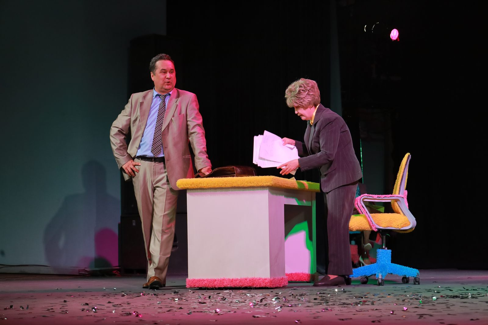
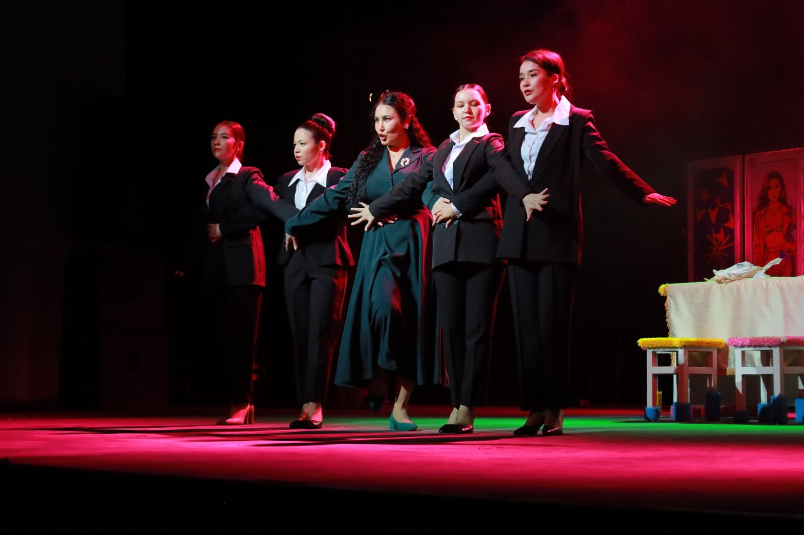
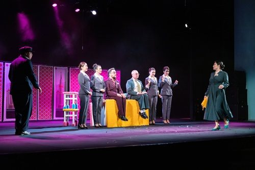

Сценограф · художник-постановщик
ПРОСТРАНСТВО
КАК ДЕЙСТВИЕ
Избранные театральные работы. Сценография, в которой образ становится правилом спектакля — механизмом, маршрутом, пустотой, движением или общей материальной средой.
Авторский подход
Мне важно найти одно ясное сценическое правило и сделать так, чтобы весь спектакль начал существовать внутри него.
Почтамт


Подполье


Таганок


Небесный тихоход


Радость нашего дома


Счастье моё


Хайбуш


